1. 图形系统绘图原理
webgl绘图，要深入细节里，根内存、cpu交互，真正控制图形输出的每一个细节；
webgl基础概念，GPU， 渲染管线，着色器；
1.1 计算机图形系统
一个通用计算机图形系统主要包括 6 个部分，分别是输入设备、中央处理单元、图形处理单元、存储器、帧缓存和输出设备。
光栅（Raster）：几乎所有的现代图形系统都是基于光栅来绘制图形的，光栅就是指构成图像的像素阵列。
像素（Pixel）：一个像素对应图像上的一个点，它通常保存图像上的某个具体位置的颜色等信息。
帧缓存（Frame Buffer）：在绘图过程中，像素信息被存放于帧缓存中，帧缓存是一块内存地址。
CPU（Central Processing Unit）：中央处理单元，负责逻辑计算。
GPU（Graphics Processing Unit）：图形处理单元，负责图形计算。
1.1.1 绘图通用过程
首先，经过CPU处理，成为具有特定结构的几何信息，然后，这些信息会被送到GPU中进行处理。在GPU中要经过两个步骤生成光栅信息。这些光栅信息会输出到帧缓存中，最后渲染到屏幕上；
这个过程主要分为两个步骤，
一是对 给定的数据结合绘图的场景进行计算（例如相机，光源，遮挡物体等等）进行计算，最终将图形变为屏幕空间的2D坐标。
二是为屏幕空间的每个像素点进行着色，把最终完成的图形输出到显示设备上，这整个过程是一步一步进行的，前一步的输出就是最后一步的输入，这个过程叫做渲染管线（RenderPipelines）
1.1.2 GPU
CPU 和 GPU 都属于处理单元，但是结构不同。
CPU像个大的工业管道，等待处理的任务就像是依次通过这个管道的货物，一条CPU流水线串行处理这些任务的速度，取决于CPU（管道）的处理能力；一个计算机系统会有很多条CPU流水线，任何一个任务 都可以随机通过任意一个流水线，这样计算机就能够并行处理多个任务了，这样一条流水线对应的就是 thread；
CPU处理大型任务是足够的，但是处理图像应用就不合适了。处理图像，实际上是处理计算图片上每一个像素点的颜色和其他信息。每处理一个像素点就相当于完成一个简单的任务，而每一个图片应用又是由无数个个像素点组成的，所以，需要在同一时间处理无数个小任务。要处理这么多的小任务，使用更小，更多的处理单元，是一种更好的处理方式，GPU就是这样的处理单元；
GPU由大量的小型处理单元构成，它没有CPU那么强大，但胜在数量众多，可以保证每个单元处理一个简单的任务。即使我们要处理一张800*600大小的图片，GPU也可以保证这48万个像素点分别对应一个小单元，这样就可以同时对每个像素点进行计算了；
2 .helloWorld
浏览器提供的webgl API是 OpenGL ES的js绑定版本，它赋予了开发者操作GPU的能力。这一特点也让webGL的绘图方式略微复杂，无法直接调用API控制画笔。大致需要以下几个步骤
2.1 webGL绘图步骤
- 创建webgl上下文
- 创建webgl程序
- 将数据存入缓冲区
- 将缓冲区数据读取到GPU
- GPU执行webgl程序，输出结果
2.1.1 创建webgl上下文
1 | const gl = canvas.getContext('webgl'); |
2.2.2 创建webgl程序
webgl程序是一个webGL Program对象，它是给GPU 最终运行着色器的程序；
首先编写两个着色器；两个着色器分别对应的是 顶点 和图元， webgl是以顶点和图元来描述图形几何信息的；所以顶点和图元是绘图过程中必不可少的。webgl绘制一个图形的过程，一般需要两段着色器，一段叫顶点着色器（Vertex Shader）负责处理图形的顶点信息，一段叫片元着色器（Fragment Shader）负责处理图形的像素信息；
2.2.2.1 顶点
顶点就是几何图形的顶点，三角形有三个顶点，四边形有四个顶点。
2.2.2.2 图元
图元是webgl可直接处理的图形单元，由webgl绘图模式决定，有点、线、三角形等；webgl中最小的图元是三角形；
webgl支持的图元类型有七种；
- gl.POINTS(点),
- gl.LINES(线段),
- gl.LINE_STRIP(线条),
- gl.LINE_LOOP(回路),
- gl.TRIANGLES(三角形),
- gl.TRIANGLE_STRIP(三角带),
- gl.TRIANGLE_FAN(三角扇)。
要绘制空心三角形，gl.LINE_STRIP(线条)、gl.LINES(线段)、 gl.LINE_LOOP(回路)都可以实现。
但是gl.LINES(线段)需要写入六个顶点([-1, -1, 0, 1, 0, 1, 1, -1, 1, -1,-1, -1]),
gl.LINE_STRIP(线条)也需要写入四个顶点([-1, -1, 0, 1, 1, -1,-1, -1]),
而gl.LINE_LOOP(回路)，只需要是三个顶点([-1, -1, 0, 1, 1, -1])；
2.2.2.3 顶点着色器和片元着色器
顶点着色器理解为处理顶点的 GPU 程序代码。它可以改变顶点的信息（如顶点的坐标、法线方向、材质等等，从而改变我们绘制出来的图形的形状或者大小等等；
顶点处理完成之后，webgl就会根据顶点和绘图模式指定的图元，计算出需要着色的像素点，然后对它们执行片元着色器程序。简单讲，就是对指定图元中的像素点着色；
webgl从顶点着色器和图元提取像素点给片元着色器执行代码的过程，就是生成光栅信息的过程，也叫它光栅化过程。所以，片元着色器的作用，就是处理光栅化后的像素信息；
举例
将图元设为线段，那么片元着色器就会处理顶点之间的线段上的像素点信息，这样画出来的图形就是空心的。
将图元设为三角形，那么片元着色器就会处理三角形内部的所有像素点，这样画出来的图形就是实心的；
因为图元是webGL可以直接处理的图形单元，所以其他非图元的圆形最终必须要转换为图元才可以被webGL处理。比如绘制实心四边形，就需要将四边形拆分成两个三角形，再交给webGL分别绘制出来；
1 | // 顶点着色器 |
1 | // 创建顶点着色器对象 |
2.2.2.4 向片元着色器传递数据（与绘图步骤无关）
1 | // 顶点着色器 |
2.2.3 将数据存入缓冲区
1 | // 定义三角形的顶点 |
2.2.4 将缓冲区数据读取到GPU
1 | // 获取顶点着色器中的position变量的地址 |
经过这样处理，在顶点着色器中，定义的points类型数组中对应的值，就能通过变量position读取到了；
2.2.5 GPU执行webgl程序，输出结果
1 | gl.clear(gl.COLOR_BUFFER_BIT); |
3. Math
我们要建立一套与各个图形系统无关联的，简单基于向量和矩阵运算的数学体系，用它来描述所有的几何图形信息。
如何建立一套描述几何图形信息的数学体系，以及如何用这个体系来解决可视化图形呈现的问题；
3.1 坐标系
坐标系与向量来描述基本图形的方法，从如何定义和变换图形的直角坐标系，以及如何运用向量表示点和线段；
3.1.1 HTML
窗口坐标体系，以参考对象的元素盒子左上角为坐标原点，x轴向右，y轴向下，坐标值对应像素值；
3.1.2 SVG
视区盒子（viewBox）坐标系，默认情况下，是以svg根元素左上角为坐标原点，x轴向右，y轴向下，svg根元素右下角坐标为它的像素宽高值。
如果设置了viewBox属性，那么svg根元素左上角为viewBox的前两个值，右下角为viewBox的后两个值；
3.1.3 Canvas
画布左上角为坐标原点，右下角坐标值为canvas画布宽高值；
3.1.4 webGL
三维坐标系，它默认以画布正中间为坐标原点，x轴朝右，y轴朝上，z轴朝外，x轴，y轴在画布中范围是 -1 到1；
3.1.5 坐标系转换(以canvas为例)
因为html svg canvas webgl都是直角坐标系，所以它们可以方便地相互转化。html，svg，canvas提供了transform的api很方便进行坐标系转换；
webgl本身不提供tranform的api，可以在shader里做矩阵运算来实现坐标转换。
在很多可视化场景下，要处理成千上万的图形，如果这个时候，在原始坐标下通过计算顶点来绘制图形，计算量会非常大，很麻烦。采用坐标变换的方式就是一个很好的优化思路，它能够简化计算量，这不仅让代码更容易理解，也可以节省CPU运算时间；
1 | const rc2 = rough.canvas(canvas2); |
3.2 向量
在直角坐标系里绘制图形，一般的几何图形都是由点，线段喝面构成，其中，点和线段是基础的图元信息，因此，如何描述它们是绘图的关键；
如何用向量来描述点和线段？一般用向量来表示一个点或者一个线段；
用二维向量来表示这个平面上的点和线段，二维向量其实就是一个包含了两个数值的数组，一个是x坐标值，一个是y坐标值；
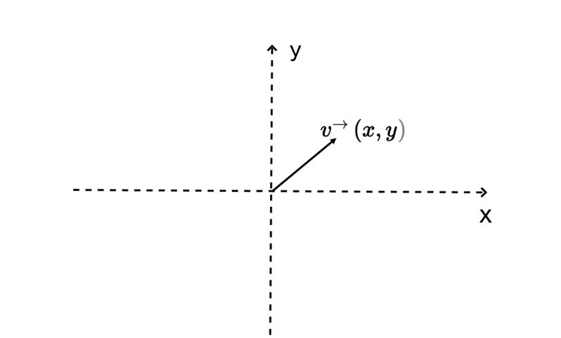
向量V(x,y)有两个含义，一是表示该坐标系下位于（x，y）处的一个点，二是可以表示从原点（0，0）到坐标（x，y）的一根线段。
3.2.1 向量基本运算
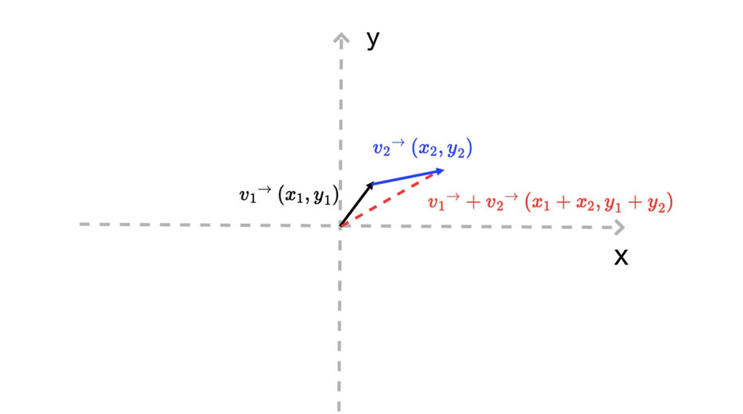
现在有两个向量，v1和v2；
v1+v2 相当于将V1的终点沿着v2向量的方向移动一段距离。这段距离等于v2向量的长度。
这样在平面上得到三个元素
- 一个新的点 (x1+x2, y1+y2)；
- 一条新的线段 [(0, 0), (x1+x2, y1+y2)];
- 一段折线 [(0,0),(x1,y1),(x1+x2, y1+y2)];
3.2.2 向量长度和方向
一个向量包含长度和方向信息
它的长度可以用向量的 x、y 的平方和的平方根 （勾三股四弦五）来表示
1 | v.length = function(){return Math.hypot(this.x, this.y)}; |
它的方向可以用与 x 轴的夹角来表示
1 | v.dir = function() { return Math.atan2(this.y, this.x);} |
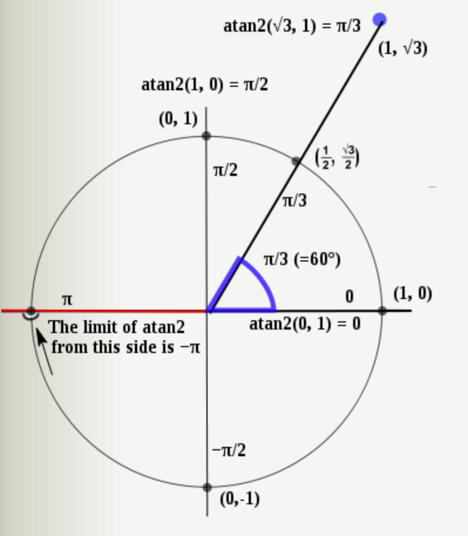
根据长度和方向的定义，还能推导出一组关系方式：
1 | v.x = v.length * Math.cos(v.dir); |
推导过程
1 | #角A 对边=y 邻边 = x, 斜边 = z |
结论： 可以很简单构造出一个绘图向量。如果以点 V（x0, y0）为起点，沿着某个方向画一段长度为length的线段，只需构造如下一个向量即可；
1 | v1 = length * v(cos(A), sin(A)) |
推导过程
1 | v1 = length * v(cos(A), sin(A)) |
可视化呈现依赖于计算机图形学，而向量运算是整个计算机图形学的数学基础；
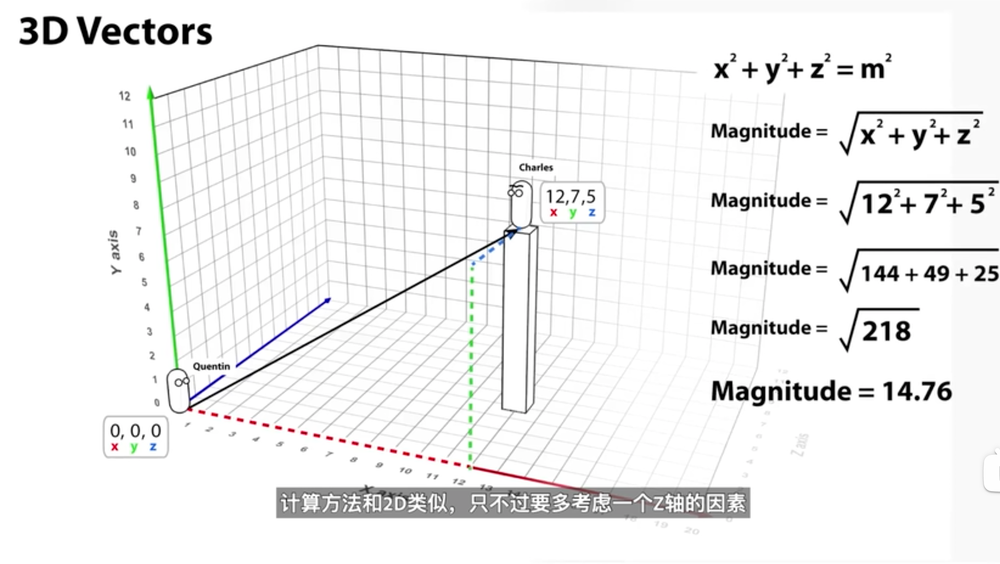
3.3 向量乘法
向量的点乘Dot.product, 向量的点乘也叫向量的内积、数量积；
向量的叉乘Corss.product，也叫向量积，外积、叉积；
3.3.1 一个例子引出向量乘法的
*判断：一个点是否在扫描器内 *
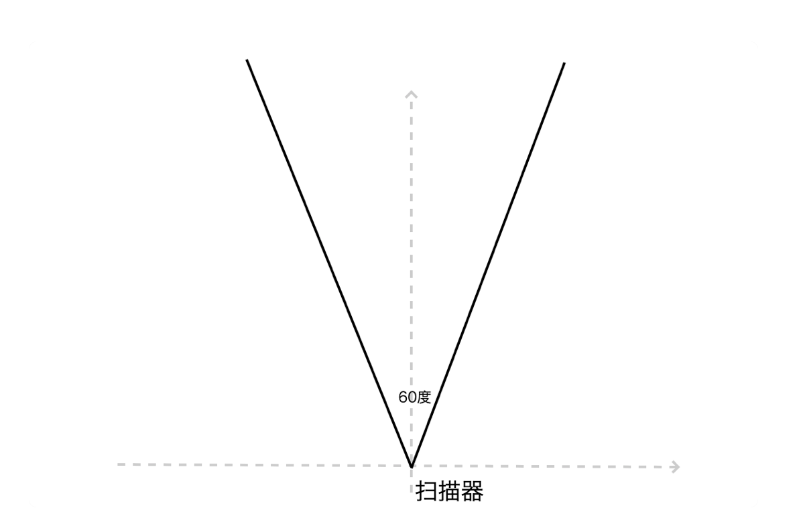
解答
如图所示，扫描器是60度，垂直向上，所以它的范围应该是60度到120度； 也就是 Math.PI/3 到 2*Math.PI/3
1 | // 先求出目标向量与X轴的夹脚 |
3.3.2 向量点乘
两个N维向量，a和b， a = [a1,a2,a3,…an], b = [b1b2b3….bn]; 那向量的点积代码：
1 | a*b = a1*b1 + a2*b2 + .... an*bn |
a, b 向量点积的几何意义，是a向量乘以b向量在a向量上的投影分量。
它的物理含义相当于a力作用于物体，产生b位移所做的功。
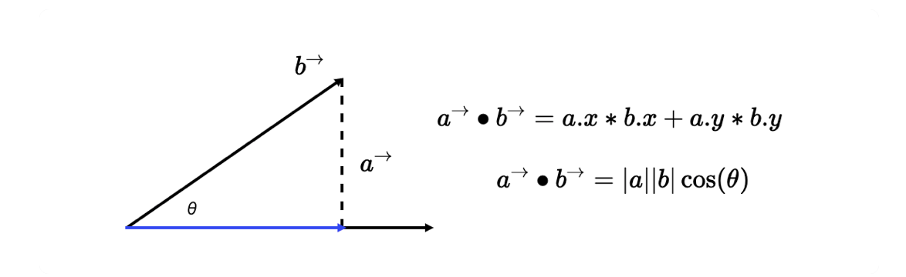
1 | // 当a、b向量平行时，那么它们的夹角为0 |
总结
向量的点乘， 对两个向量执行点乘运算，结果是一个【Scaler标量】（一个数字）
（标量： scalar， 只有大小没有方向的量，例如物体移动中的平均速率·路程）
3.3.3 向量的叉乘
向量的叉乘，则是针对两条向量的另一种运算方式。
向量叉乘运算的结果不是标量，而是一个新的向量；新的向量会 垂直于 原来的这两条向量；
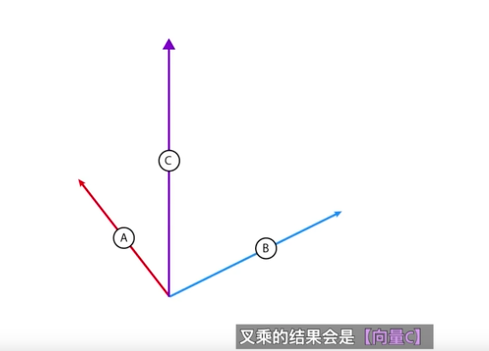
向量A和向量B的叉积是向量C， 【向量C】同时垂直于【向量A和向量B】
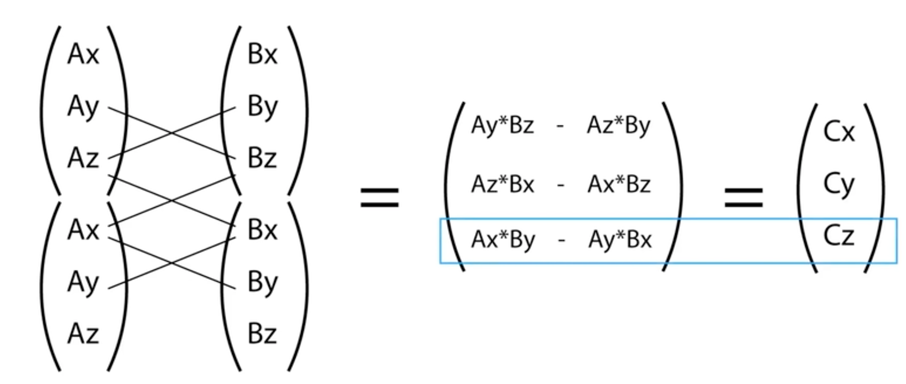
【向量的叉乘】一个用途就是找到我们应该在哪一轴上施加【扭力Torque】（还有，跟踪导弹，比如合金弹头的C弹，也是可以通过叉乘的方法去实现的）；
如下示例：
【向量A】表示的是炮口【当前朝向】
【向量B】表示的是炮口将要【调整后的朝向】
【向量C】将两个向量进行叉乘后，找到炮口需要在哪一轴上进行旋转并且施加相应的扭力；
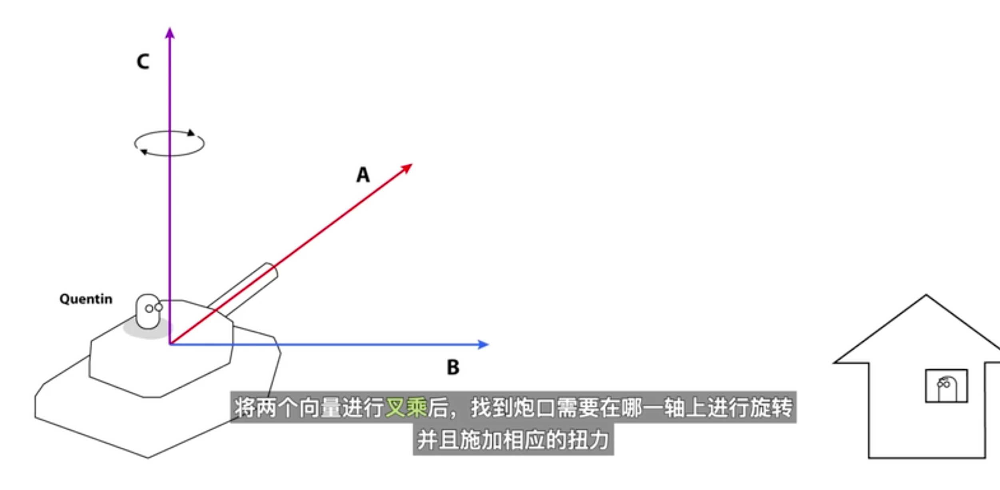
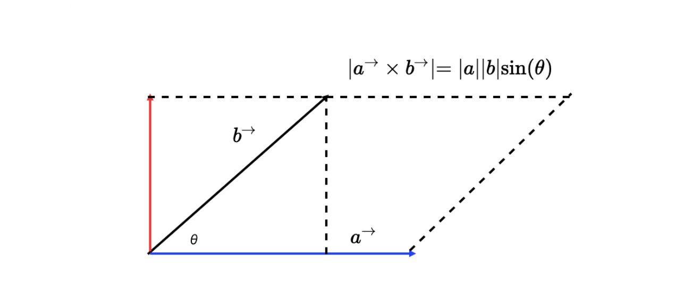
叉积几何意义
向量a和b的叉积，就相当于向量a（蓝色带箭头线段）与向量b沿垂直方向的投影（红色带箭头线段）的乘积。（如上图所示），二维向量叉积的几何意义就是向量a、b组成的平行四边形的面积；
1 | |a| 表示向量a的length； |
思考题：求点到线段的距离
在了解向量叉积的几何意义之后， 我们通过向量叉积得到平行四边形的面积，再除以底边长；就能得到点到向量所在直线的距离
叉乘在数学上的计算方法
1 | // 其中，i，j，k 分别是 x，y，z 轴的单位向量，我们把行列式展开，就能得到如下公式： |
更多点积差积相关知识参考https://geek-docs.com/linear-algebra/vector/vector-chaji.html
回到思考题3: 给任意一个点，判断这个点在不在扫描器内
归一化
归一化，用 v0的 x、y 分别除以它的绝对值。归一化后的向量方向不变，长度为 1。 在向量乘法里，如果 a、b 都是长度为 1 的归一化向量，那么|a X b| 的结果就是 a、b 夹角的正弦值，而|a • b|的结果就是 a、b 夹角的余弦值。
好了，再说回来，我们把归一化的向量 a 叉乘扫描器中线上的 v(0,1)，由于扫描器关于 y 轴对称，所以扫描器边缘与 y 轴的夹角是正负 30 度。那么在与单位向量求叉积的时候，就会出现 2 种情况：
- 点在扫描范围内，如向量 a，就一定满足： |a X v| <= ||a||v|sin(30°)| = |sin(30°)| = 0.5；
- 点不在扫描范围内，如向量 b，就一定满足：|b X v| > ||b||v|sin(30°)| = |sin(30°)| = 0.5。
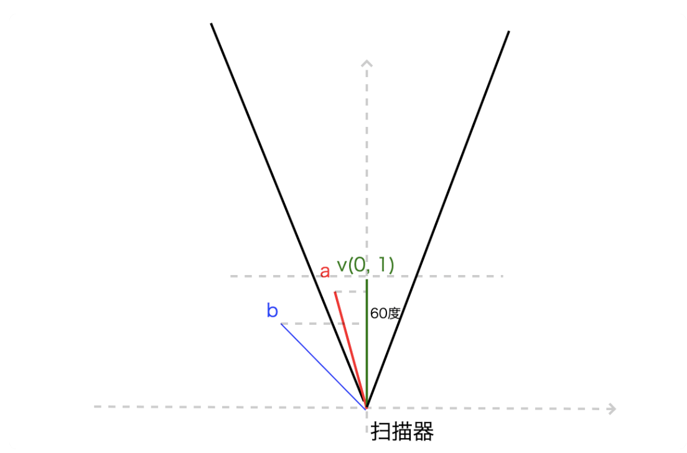
因此，只要任意一点所在的向量与单位向量的叉积结果的绝对值不大于0.5（即sin30度），就说明这个点在扫描范围内，所以如下判断方法
1 |
|
3.3.4 点乘与叉乘加述
- Dot product
1 | a向量 * b向量 = a长度 * b长度 * cos@ |
点乘能快速得到两个向量的夹角， 特别是在两个向量都是单位向量的时候。它们的长度自然都是1；所以它们的点乘自然就是夹角的cos值；
点乘满足的计算规律
交换律，分配律，结合率；
- Cross product
3.4 向量和参数方程描述曲线
用参数方程描述曲线的方法，通过此方法可以描述常见的圆，椭圆，抛物线，正余弦等曲线，还能描述更具一般性的曲线；比如贝塞尔曲线，或者Catmull-Rom曲线等等；
3.4.1 画圆
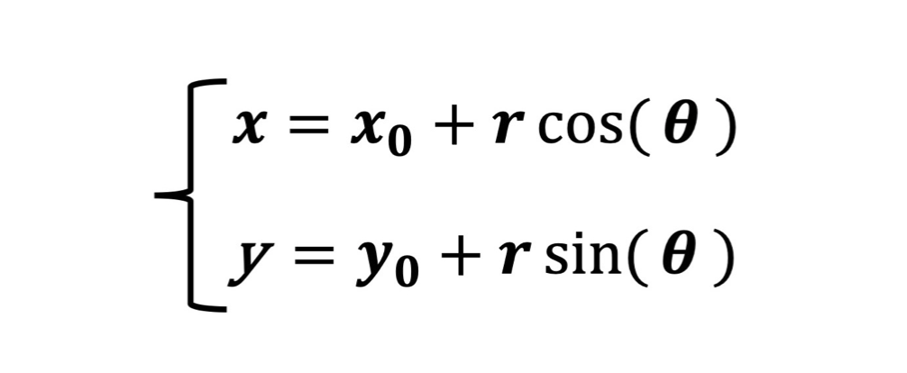
如下图所示的参数方程，圆心为（x0, y0），半径为r；
3.4.2 画圆椎曲线
除了画圆，参数方程还可以描述很多其他圆椎曲线，比如椭圆的参数方程。它其实和圆的参数方程很接近。其中，a，b 分别是椭圆的长轴和短轴，当a=b=r时，这个方程就是椭圆的方程式。圆是椭圆的特例；
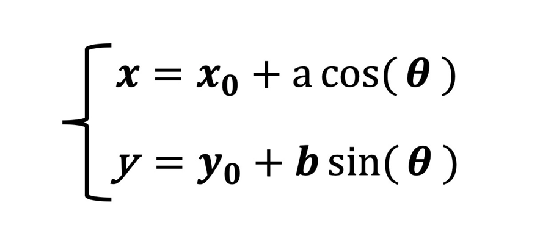
3.4.3 抛物线的参数方程，
其中p是常数，为焦点到准线的距离
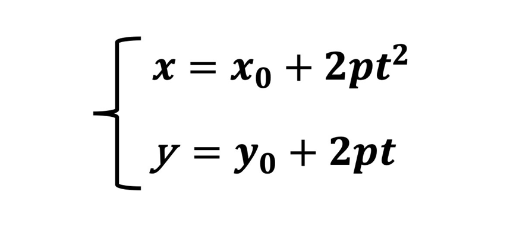
3.4.4 贝塞尔曲线
3.5 三角剖分和向量操作描述并处理多边形
3.6 仿射变换对几何图形进行坐标变换